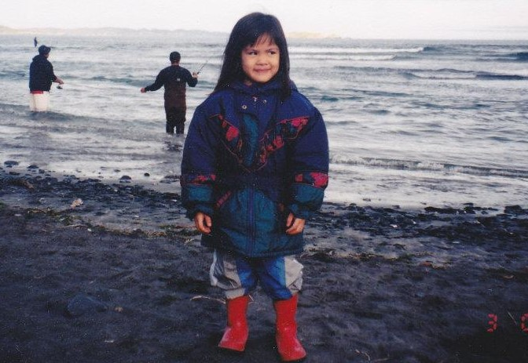

20 years old
Filipino-American
aspiring web developer
Krisha is pronounced krih-shuh. I'm delighted to virtually introduce myself ☼.
I was born in San Diego, California where I spent the first six months of my life. I spent the next five and a half years in Kodiak, Alaska. I don't remember much of it, but I do remember doing plenty of fishing in rivers and at beaches. Here is a picture of me!

I relocated to Orlando, Florida in 2001 and have been here ever since. I would be eternally grateful to relocate again sometime in the future and hope that my opportunities will take me somewhere new. Currently my "hard skills" are basic web development tools, such as HTML, CSS, Adobe Photoshop, and a handful of other Adobe suite products. I was seeking a degree in digital media which recently shifted into web development.
Time for some fun facts! I...
Connect with Me